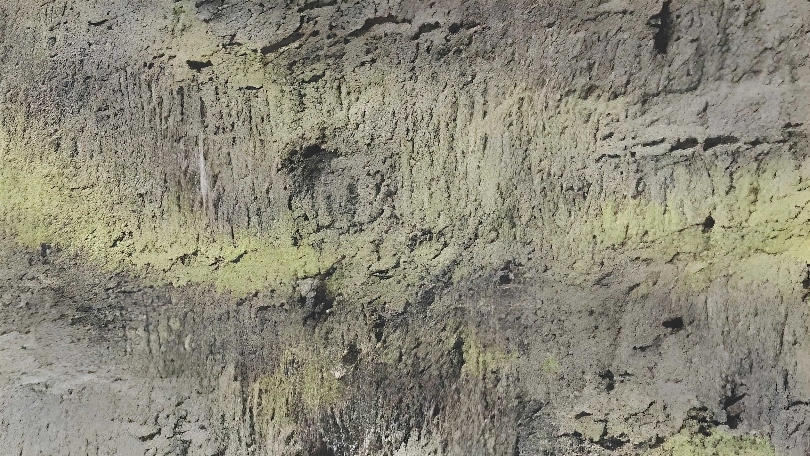

FOZ DTX 2.0
A hyper realstic resource pack for minecraft Bedrock/Pocket
-
About
FOZ DTX 2.x is in 2 series of FOZ DTX developed by ghgltggamer . it's a extremely detailed photo realstic texture pack because it uses the light baked mapping in game . It doesn't need a shader to make realstic 3d depth , By default it looks like totaly 3d because dvery textures are from resl kife and baked in light so that shadows and 3d illusions , depth are pre added in the resource pack. This pack also supports Nvidia Ray Tracing for making more stunning visualls. FOZ DTX 2 Seties is successor and a very advanced resource pack of FOZ DTX 0 and 1 series. this series doesn't supports POM & PBR but in less size it has 2 different resolution 400x and 1600x smd due to light baking it will seen more 3d. This series texturea are more reslstic than FOZ DTX ALVAX EDITION, FOZ DTX RT EDITION, FOZ DTX CUDA EDITION, FOZ DTX 1 SERIES, This series is only compatible with bedrock and pocket.
-
Sceen shots


-
Pricing (₹)
FOZ DTX 2 Series is under FOZ DTX LICENSE with respect of MIT License so it's fully free for each and every resolution.
- Data Center
Data Center means where the data of a company stored , FOZ DTX uses various Data Centers and Cloud Storage for making FOZ DTX secure and stored in a place.
- Stream Center
FOZ DTX has a stream center where all the FOZ DTX records are stored including Earnings, Net worth, earnings/day, Spendings and more